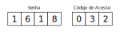

Subseção 6.2.1 Princípio Aditivo
Exemplo 6.2.1.
Suponha que na disciplina de análise combinatória existem três listas de exercício. A 1ª contém 15 exercícios, a 2ª contém 18 exercícios e a 3ª contém 14 exercícios. De quantas maneiras um estudante pode escolher um exercício para resolver?
Solução.
O estudante têm 15 opções para escolher um exercício da primeira lista, 18 opções para escolher um exercício da segunda lista e 14 opções para escolher um exercício da terceira lista. Portanto o estudante têm
\begin{equation*}
15+18+14 = 47
\end{equation*}
maneiras de escolher um exercício.
Definição 6.2.2.
(O Princípio Aditivo 1ª versão) Se uma tarefa puder ser feita de \(n_1\) maneiras e uma segunda tarefa de \(n_2\) maneiras e se essas tarefas não puderem ser feitas ao mesmo tempo; então, existem \(n_1+n_2\) maneiras de fazer ambas as tarefas.
Teorema 6.2.3.
(O Princípio Aditivo 2ª versão) Sejam \(A\) e \(B\) conjuntos finitos e disjuntos, então
\begin{equation*}
\#(A\cup B)=\#A+ \#B
\end{equation*}
Demonstração.
Sejam \(T_a\) e \(T_b\) as tarefas de escolher um elemento em \(A\) e em \(B\text{,}\) respectivamente. Existem \(\#A\) maneiras de escolher um elemento em \(A\) e \(\#B\) maneiras de escolher um elemento em \(B\text{.}\) Pelo Princípio Aditivo 1ª versão, como as tarefas não podem ser feitas ao mesmo tempo, o número de maneiras de escolher um elemento em cada um dos conjuntos é
\begin{equation*}
\#(A\cup B)=\#A+ \#B.
\end{equation*}
Tecnologia 6.2.4.
Abaixo, clique em "Evaluate (Sage)" para obter a lista com todos os elementos da união dos conjuntos \(\{a, b, c\}\) e \(\{1, 2, 3, 4\}\text{.}\)
O comando set(['a', 'b', 'c']) transforma a lista ['a', 'b', 'c'] em conjunto, ou seja, mesmo se tiverem elementos repetidos na lista, o método set remove as repetições e retorna um conjunto. Assim é possível usar métodos específicos para conjuntos, como união, interseção, diferença e diferença simétrica.
Subseção 6.2.2 Princípio Multiplicativo
Exemplo 6.2.5.
Quantos números naturais de três algarismos distintos (na base 10) existem?
Solução.
O procedimento de escolher um número satisfazendo estas hipóteses pode ser quebrado em três tarefas.
A 1ª tarefa é escolher o primeiro dígito, (da esquerda para a direita) que pode ser feito de 9 maneiras, já que o zero não pode ser escolhido.
A 2ª tarefa é escolher o segundo dígito, que pode ser feito de 9 maneiras, pois não pode ser igual a escolha do primeiro dígito.
A 3ª tarefa é escolher o terceiro dígito, que pode ser feito de 8 maneiras, pois não pode ser igual aos dois primeiros dígitos.
A resposta é
\begin{equation*}
9\times 9\times 8 = 648\text{.}
\end{equation*}
Definição 6.2.6.
(O Princípio Multiplicativo 1ª versão) Suponha que um procedimento pode ser quebrado em duas tarefas. Se existem \(n_1\) maneiras de executar a primeira tarefa e \(n_2\) maneiras de executar a segunda tarefa, depois que a primeira tarefa estiver executada, então existem \(n_1\times n_2\) maneiras de executar o procedimento.
Teorema 6.2.7.
(Princípio Multiplicativo 2ª versão) Sejam \(A\) e \(B\) conjuntos finitos; então,
\begin{equation*}
\#(A\times B) = \#A\times \#B.
\end{equation*}
Demonstração.
Note que a tarefa de escolher um elemento no produto cartesiano \(A\times B\) pode ser feita escolhendo um elemento em \(A\) e um elemento em \(B\text{,}\) do Princípio Multiplicativo 1ª versão temos
\begin{equation*}
\#(A\times B) = \#A\times \#B.
\end{equation*}
Tecnologia 6.2.8.
Abaixo, clique em "Evaluate (Sage)" para obter a lista com todos os elementos do produto cartesiano \(\{a, b, c\}\times\{1, 2, 3\}\text{.}\)
Exemplo 6.2.9.
A placa dos automóveis eram formadas por 3 letras (K, Y e W inclusive) seguidas por quatro algarismos. Quantas placas podiam ser formadas?
Solução.
Cada letra pode ser escolhida de 26 modos e cada algarismo de 10 modos distintos. A resposta é
\begin{equation*}
26\times26\times26\times 10\times10\times10\times10 = 26^3\times10^4 = 175760000.
\end{equation*}
Exemplo 6.2.10.
Sejam \(A\) e \(B\) dois conjuntos com \(\#A=m\) e \(\#B=n\text{.}\)
Quantas são as funções \(f:A\rightarrow B\) ?
Quantas são as funções injetoras \(f:A\rightarrow B\) ?
Solução.
Solução 1. Devemos escolher a imagem de cada elemento de \(A\text{.}\) Existem \(n\) modos de escolher a imagem do "primeiro" elemento de \(A\text{,}\) \(n\) modos de escolher a imagem do "segundo" elemento de \(A\) \(\ldots\) até \(n\) modos de escolher a imagem do "m-ésimo" elemento de \(A\text{.}\) Pelo princípio multiplicativo, temos
\begin{equation*}
\overbrace{n\times n \times n \cdots \times n}^{m \text{ termos}} = n^m.
\end{equation*}
2. Primeiramente, para existir solução precisamos que \(n\geq m\text{,}\) pois a função precisa ser injetora. Neste caso, existem \(n\) modos de escolher a imagem do "primeiro" elemento de \(A\text{,}\) \(n-1\) modos de escolher a imagem do "segundo" elemento de \(A\) \(\ldots\) até \(n-m+1\) modos de escolher a imagem do "m-ésimo" elemento de \(A\text{.}\) A resposta é
\begin{equation*}
(n-0)\times(n-1)\times(n-2)\times \cdots \times(n-(m-1))
\end{equation*}
Exemplo 6.2.11.
Quantos são os números naturais pares que se escrevem (na base 10) com três algarismos distintos?
Solução.
Já sabemos que o número total de números naturais com três algarismos distintos é
\begin{equation*}
9\times 9\times 8 = 648.
\end{equation*}
Podemos contar dentre estes, os que são ímpares, a diferença será a resposta deste problema.
O último algarismo pode ser escolhido de 5 maneiras (1, 3, 5, 7 ou 9). O primeiro algarismo pode ser escolhido de 8 maneiras (não pode ser o zero, nem o que foi escolhido para o último algarismo) e o segundo algarismo pode ser escolhido de 8 maneiras (nem pode ser igual ao primeiro nem ao último). Portanto a resposta é
\begin{equation*}
648 - 5\times 8\times 8=328.
\end{equation*}
Exercícios 6.2.3 Exercícios
1.
Quantas palavras contendo 5 letras diferentes podem ser formadas com um alfabeto de 26 letras?
Resposta.
Solução.
Para formar uma palavra, temos 26 opções para a primeira letra, 25 opções para a segunda letra, 24 opções para a terceira letra, 23 opções para a quarta letra e 22 opções para quinta e última letra. Pelo Princípio Multiplicativo a resposta é
\begin{equation*}
26\times 25\times 24\times 23\times 22 = 7893600.
\end{equation*}
2.
Quantos são os gabaritos possíveis de um teste de 25 questões de múltipla-escolha, com cinco alternativas por questão?
Resposta.\(5^{25}=298023223876953125\)
Para cada questão, temos 5 opções. Como são 25 questões a resposta é
\begin{equation*}
\underbrace{5\times 5\times \cdots \times 5}_{25 \text{ termos}} = 5^{25} = 298023223876953125.
\end{equation*}
3.
Quantos divisores naturais possui o número 600?
Resposta.
Solução.
A fatoração em primos de número 600 é \(2^3\times 3\times 5^2.\) Os divisores naturais de 600 são os números da forma:
\begin{equation*}
2^a\times 3^b\times 5^c, ~~~~ \text{com}~~ 0\leq a\leq 3,~ 0\leq b\leq 1,~ 0\leq c\leq 2\text{.}
\end{equation*}
Portanto, temos quatro opções para o valor de \(a\text{,}\) duas opções para o valor de \(b\) e três opções para o valor de \(c\text{.}\) Logo, a resposta é
\begin{equation*}
4×2×3=24.
\end{equation*}
4.
Em uma banca há 7 exemplares iguais da revista A, 4 exemplares iguais da revista B e 15 exemplares igauis da revista C. Quantas coleções não vazias de revistas dessa banca é possível formar?
Resposta.\(8\times 5\times 16 - 1=639\)
Vamos inicialmente contar de forma que seja possível obter uma coleção vazia, no final, essa possibilidade será excluída do total para obtermos a resposta.
Como exitem 7 exemplares da revista A, podemos escolher de 0 até 7 exemplares para incluir na coleção, totalizando 8 possibilidades. Como existem 4 exemplares da revista B, podemos escolher de 0 até 4 exemplares para incluir na coleção, totalizando 5 possibilidades. Por último, como existem 15 exemplares da revista C, podemos escolher de 0 até 15 exemplares para incluir na coleção, totalizando 16 possibilidades.
A única maneira de escolher os exemplares, de modo que a coleção fique vazia é escolhendo 0 exemplares de cada revista. Portanto a resposta é
\begin{equation*}
8\times 5\times 16 - 1=639
\end{equation*}
5.
Quantos números inteiros entre 1000 e 9999 são ímpares e possuem quatro dígitos distintos?
Resposta.\(5\times 8\times 8\times 7 = 2240\)
Vamos começar escolhendo o dígito das unidades. O dígito das unidades pode ser qualquer um dos elementos do conjunto: \(\{1, 3, 5, 7, 9\}\text{,}\) ou seja, temos 5 opções. Agora, vamos escolher o primeiro dígito, da esquerda para a direita. O primeiro dígito nem pode ser igual ao dígito das unidades, nem pode ser zero, portanto, temos 8 opções para escolhe-lo. Para escolher o segundo dígito, temos 8 opções, pois ele nem pode ser igual ao primeiro dígito, nem igual ao último. Finalmente, para escolher o terceiro dígito temos 7 opções, pois 3 dígitos já foram escolhidos. Pelo princípio multiplicativo, a resposta é
\begin{equation*}
5\times 8\times 8\times 7 = 2240.
\end{equation*}
6.
Um restaurante apresenta um cardápio popular, onde o cliente escolhe uma salada (dentre salada verde, salada russa ou salpicão), um prato principal (bife com fritas, peixe com purê, frango com legumes ou lasanha) e uma sobremesa (salada de frutas, pudim ou doce de leite). Quantas são as possíveis refeições?
Resposta.
Solução.
Temos 3 opções para a salada, 4 opções para a prato principal e 3 opções para a sobremesa. Portanto a resposta é
\begin{equation*}
3\times 4\times 3 = 36.
\end{equation*}
7.
(UPE Seriado 2013 corrigido) Para efetuar saques, pagamentos, transferências e outras movimentações, os clientes do Banco Money precisam digitar uma senha numérica de sete dígitos que corresponde a uma senha formada por quatro algarismos e, em seguida, um código de acesso, também numérico, formado por três algarismos. Os clientes são orientados a não criar senhas iniciadas com zero nem códigos de acesso com algarismos repetidos, como no exemplo a seguir:

Dessa forma, quantas senhas numéricas distintas podem ser criadas pelos clientes do Banco Money?
a) 1,64 milhões b) 3,62 milhões c) 5,16 milhões d) 6,48 milhões e) 9,80 milhões
Resposta.
Solução.
O primeiro algarismo da Senha pode ser escolhido de 9 maneiras, o segundo, o terceiro e o quarto, podem ser escolhidos de 10 maneiras cada um.
O primeiro algarismo do Código de Acesso pode ser escolhido de 10 maneiras, o segundo de 9 maneiras e o terceiro de 8 maneiras. Portanto a resposta é:
\begin{equation*}
9\times10\times10\times10\times10\times9\times8 = 6480000.
\end{equation*}
8.
(PROFMAT 2015) De um baralho comum de 52 cartas são retiradas, em sequência e sem reposição, duas cartas. De quantos modos isso pode ser feito de maneira que a primeira carta seja de ouros e a segunda carta não seja uma dama? Informação: Um baralho de 52 cartas tem 4 naipes: copas, espadas, ouros e paus. Cada naipe possui 13 cartas: A(ás), 2, 3, 4, 5, 6, 7, 8, 9, 10, J(valete), Q(dama) e K(rei). Portanto há 4 reis, 4 damas, 4 valetes, 4 ases, etc.
a) 611 \(~~~\) b) 612 \(~~~\) c) 624 \(~~~\) d) 625 \(~~~\) e) 637
Resposta.
Solução.
Vamos separar em dois casos.
1º caso: a primeira carta é uma dama de ouros. Nesse caso, a primeira carta já está determinada. Para a segunda carta sobraram 51 opções, mas não queremos que ela seja uma dama, como ainda retam 3 damas o total de opções é \(51-3 = 48\text{.}\)
2º caso: a primeira carta não é uma dama de ouros. Nesse caso, temos 12 opções para a primeira carta, pois ela precisa ser de ouros, sem ser dama. Para a segunda carta sobraram 51 opções, mas não queremos que seja uma dama, o total de opções é \(51-4 = 47\text{.}\)
Pelos princípios aditivo e multiplicativo a resposta é
\begin{equation*}
1\times 48 + 12\times 47 = 612.
\end{equation*}
9.
(OBM 2004 - 2ª fase do nível 1) De quantos modos podemos sombrear quatro casas do tabuleiro \(4\times4\) de modo que em cada linha e em cada coluna exista uma única casa sombreada?
Resposta.
Solução.
Para a primeira linha, temos 4 opções. Para a segunda linha, temos 3 opções, pois não podemos sombrear na mesma coluna que já foi sombrado na linha 1. Na terceira linha, temos 2 opções, e finalmente, na última linha temos apenas uma opções. A resposta é
\begin{equation*}
4\times 3\times 2\times 1 = 24.
\end{equation*}
10.
(OBM 2005 - 2ª fase do nível 1) Lara tem cubos iguais e quer pintá-los de maneiras diferentes, utilizando as cores laranja ou azul para colorir cada uma de suas faces. Para que dois cubos não se confundam, não deve ser possível girar um deles de forma que fique idêntico ao outro. Por exemplo, há uma única maneira de pintar o cubo com uma face laranja e cinco azuis. Quantos cubos pintados de modos diferentes ela consegue obter?
Resposta.
Solução.
Para 0 faces azuis e 6 laranjas, Lara só tem uma maneira de pintar os cubos.
Para 1 face azul e 5 laranjas, Lara só tem uma maneira de pintar os cubos.
Para 2 faces azuis e 4 laranjas, Lara tem duas maneiras de pintar os cubos, duas faces azuis opostas, ou duas adjacentes.
Para 3 faces azuis e 3 laranjas, Lara tem duas maneiras de pintar os cubos, três faces azuis com um vértice em comum, ou três faces azuis com uma aresta em comum, duas a duas.
Para 4 faces azuis e 2 laranjas, Lara tem duas maneiras de pintar os cubos, duas faces laranjas opostas, ou duas adjacentes.
Para 5 faces azuis e 1 laranja, Lara só tem uma maneira de pintar os cubos.
Para 6 faces azuis e 0 laranjas, Lara só tem uma maneira de pintar os cubos.
Pelo princípio aditivo, a resposta é
\begin{equation*}
1+1+2+2+2+1+1 = 10.
\end{equation*}
11.
(FUVEST 2015 - 2ª fase) Um “alfabeto minimalista” é constituído por apenas dois símbolos, representados por \(*\) e \(\#\text{.}\) Uma palavra de comprimento \(n, n \geq 1\text{,}\) é formada por \(n\) escolhas sucessivas de um desses dois símbolos. Por exemplo, \(\#\) é uma palavra de comprimento \(1\) e \(\#**\#\) é uma palavra de comprimento \(4\text{.}\) Usando esse alfabeto minimalista,
quantas palavras de comprimento menor do que \(6\) podem ser formadas?
qual é o menor valor de \(n\) para o qual é possível formar \(1.000.000\) de palavras de tamanho menor ou igual a \(n\text{?}\)
Resposta.a) \(62~~~~\) b) \(19\text{.}\)
item a) O número de palavras de comprimento menor que 6 é
\begin{equation*}
2^1 + 2^2 + 2^3 + 2^4 + 2^5 = \frac{2\times(2^5-1)}{2-1} =2\times 32 = 62.
\end{equation*}
item b) Precisamos descobrir o menor valor de \(n\) para que
\begin{equation*}
2^1 + 2^2 + \cdots + 2^n > 1.000.000.
\end{equation*}
Usando a fórmula da soma da PG, temos
\begin{equation*}
\frac{2\times(2^n-1)}{2-1} > 1.000.000 \Leftrightarrow 2^n> 500.001.
\end{equation*}
Como \(2^{18} = 262144\) e \(2^{19} = 524288\) concluímos que o menor valor de \(n\) é \(19\text{.}\)